增强 Vue 项目的智能感知
本文说的类型支持仅仅是 VS Code 的 IntelliSense 功能，并非静态类型语言的类型检查，所以对开发的效率提升不大，但是可以提高项目的可维护性，即所谓代码即文档 CaaD（Code as a Documentation -_-）。
VS Code 的 IntelliSense 功能
使用过 IDE 与静态类型语言的同学可能很熟悉了，比如 VS/C# 的自动导入命名空间、Code Refactor（重命名属性/方法/类名等标识符，并自动修改所有的引用）、转到定义（转到声明、查找引用）甚至代码段提取（提取一段代码作为一个函数，并自动将依赖的变量作为参数输入）等各种强大的功能。
而 JS 是一个动态类型的语言，为了支持上述功能，VS Code 团队开发了一个插件，名为 Visual Studio IntelliCode，最早该插件是作为一个外部扩展，后来直接作为内部扩展，可以直接使用。
以下摘自官网描述：
IntelliSense is a general term for a variety of code editing features including: code completion, parameter info, quick info, and member lists. IntelliSense features are sometimes called by other names such as "code completion", "content assist", and "code hinting."
蹩脚翻译如下：
智能感知是一系列编码特性的统称，包括自动补全、参数提示、快捷信息以及成员提示。……
特别注意：在成员提示被关闭的情况下可以使用快捷键 Ctrl+Space 重新打开成员提示（极大的可能与 Windows 系统默认的输入法切换键冲突导致失效，此时可以考虑更换快捷键），与 Ctrl+Shift+Space 打开参数提示。
配置 jsconfig.json
首先要说的是 jsconfig.json 文件。用 vue 脚手架生成的项目中，并无该文件，且一般情况下没有该文件也会有 IntelliSense 功能。
这里配置 jsconfig.json 的必要原因是：
- 无该文件会导致项目内的
.d.ts文件不一定被加载； - 对于
Vue项目来说，导入时使用@是很常见的行为，但是这将会导致IntelliSense无法识别。
一个常见的 jsconfig.json 配置如下：
{
"compilerOptions": {
"baseUrl": ".",
"paths": {
"@/*": [
"src/*"
]
}
},
"include": [
"./src/**/*.d.ts",
"./src/**/*.js",
"./src/**/*.vue"
]
}
这个 jsconfig.json 包含了对导入时 @ 的解析以及扫描项目 src 目录及其子目录下的 .d.ts、.js、.vue 文件，以建立类型、引用等相关信息（转到定义、查找引用以及自动导入的关键）。
配置完成后重新加载（Ctrl+Shift+P 输入 Reload Window 并回车）即可。此时输入 import '@/' 后会有路径提示（如果没有可能是还没有加载完成，耐心等待一会儿 -.-）。
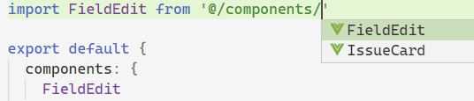
值得注意的是，导入 SFC 文件时，文件的路径必须添加 .vue 后缀：
import FieldEdit from '@/components/FieldEdit.vue'
这样的话你就可以将光标移动到组件名称上按下 F12 键以导航到组件的定义，否则是无法导航到组件定义的，你会看到这样的提示：
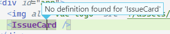
另外，配置完成后，还可以在 <template> 标签中得到自定义组件的补全提示，如果没有导入，甚至可以在敲回车补全时自动导入：
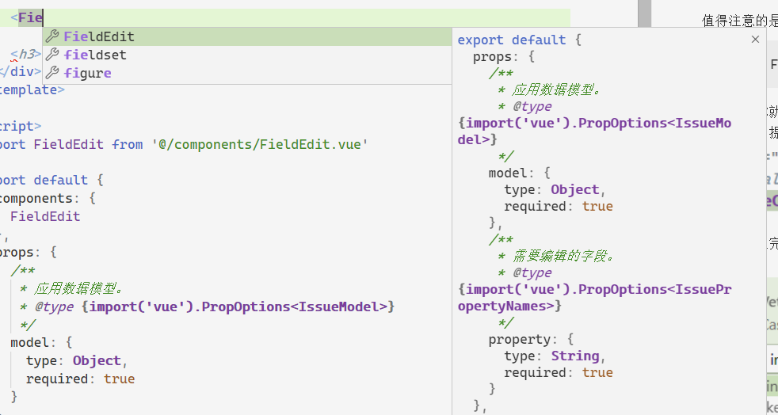
至于提示的组件的命名方式可以在此处配置，具体每个选项都有描述就不说了：
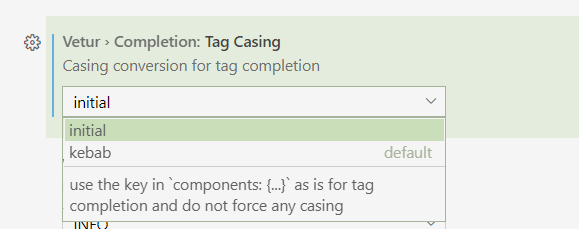
JSDoc 注释
即使用注释来说明代码。在 VS Code 中可以通过在 js 类型的文件中输入 /** 来触发 JSDoc 代码片段，以下是一些实例：
/**
* 引用数据额外的信息发生了变化的事件。
*/
const EVENT_ISSUE_INFO_CHANGE = 'issue-info-change'
/**
* 所属的应用类型 ID。
*/
const ISSUE_TYPE = {
/** 需求。 */
REQUIREMENT: 1,
/** 任务。 */
TASK: 2
}
/**
* 将一个字符串反过来。
* @param {string} str 需要反转的字符串。
* @returns {string} 反转后的字符串。
*/
function reverseString (str) {
return str.split('').reverse().join('')
}
这种注释可以提供如下的效果，在成员提示的列表中可以显示注释内容，即做到文档的效果（同时鼠标悬浮时也会有文档的提示）：
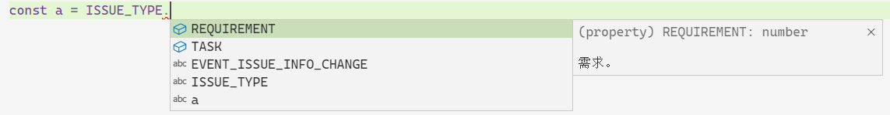
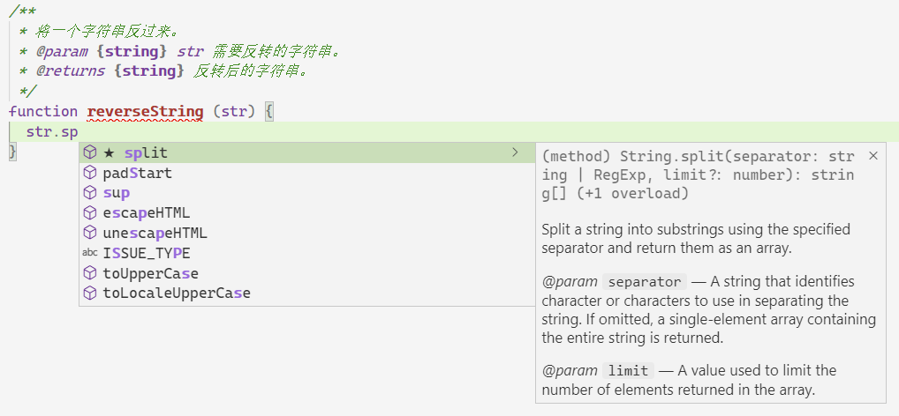
可以看到，第二张图标注了传入参数 str 的类型，在输入 str.sp 时会给予成员提示，敲回车键后即会自动完成。
类型声明文件
类型声明文件是一个 .d.ts 文件，使用过 Type Script 的同学应该不陌生，在使用 Type Script 开发库项目时，如果需要发布到 npm 仓库，则需要编译成 js 发布，并可以用 tsc 生成对应的类型声明文件，以供使用者参照。
对于没有 Type Script 的 Vue 项目，仍然可以使用 .d.ts 文件带来的部分便利，虽然需要手写 .d.ts 文件。
一个 .d.ts 文件的例子如下：
/**
* 应用数据的模型。
*/
declare type IssueModel = {
/**
* 应用数据的属性字典。
*/
dataMap: {
[key in IssuePropertyNames]: IssueProperty
}
/**
* 可编辑的属性名称列表。
*/
editablePropertyList: string[]
}
/**
* 应用数据的数据属性名称列表。
*/
declare type IssuePropertyNames =
'id' |
'issuetype' |
'key' |
'project' |
'summary' |
'description'
/**
* 应用数据的属性定义。
*/
declare interface IssueProperty {
/**
* 属性的名称。
*/
name: string
/**
* 属性值的可读形式。
*/
label: string
/**
* 属性值。
*/
value: PropertyValue
}
/**
* 属性值的类型。
*/
declare type PropertyValue = boolean | number | string | boolean[] | number[] | string[]
上述代码并不会生成 js 代码，仅仅在开发期间被编辑器或集成开发环境识别以用作代码自动完成、成员提示等功能。在数据结构较为复杂时，可以利用类型声明文件作为文档以提高项目的可维护性。
虽然类型声明文件不参与 js 代码的执行，但是仍然可以利用类型声明文件影响到 js 代码的编写，将上述类型声明文件保存后，即可在 js 代码中以 JSDoc 的形式引用：
/**
* 应用数据模型。
* @type {IssueModel}
*/
const model = {
dataMap: {
issuetype: {
value: ISSUE_TYPE.REQUIREMENT
}
}
}
console.log(model.dataMap.issuetype.value)
效果如下：
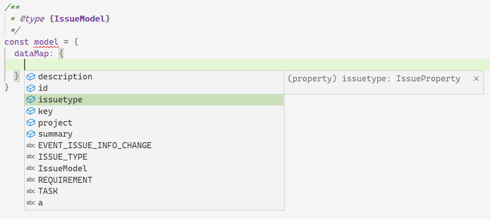
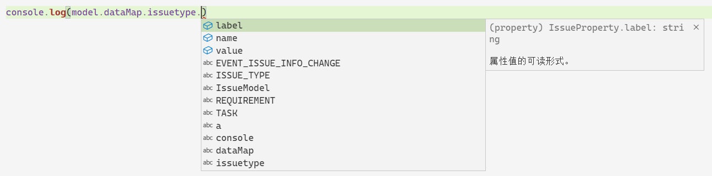
SFC 的成员类型
<template>
<div>
<input v-model="value" @blur="handleInputBlur" />
</div>
</template>
<script>
export default {
props: {
/**
* 应用数据模型。
* @type {import('vue').PropOptions<IssueModel>}
*/
model: {
type: Object,
required: true
},
/**
* 需要编辑的字段。
* @type {import('vue').PropOptions<IssuePropertyNames>}
*/
property: {
type: String,
required: true
}
},
data () {
return {
value: this.model.dataMap[this.property].value,
/**
* @type {IssueModel}
*/
other: {}
}
},
methods: {
/**
* 获取属性值。
* @param {IssueModel} issue 应用数据模型。
* @param {IssuePropertyNames} property 属性名称。
* @returns {PropertyValue} 属性值。
*/
getPropertyValue (issue, property) {
issue.dataMap[property].value
},
handleInputBlur () {
this.$emit('submit', this.model, this.property, this.value)
}
}
}
</script>
上面分别标记了 props、data、methods 的数据类型、参数及返回值，在引用这些属性、变量时，将会有自动完成提示、参数信息等：
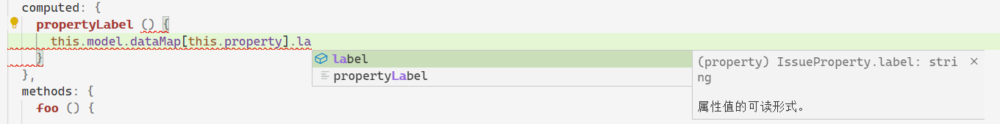
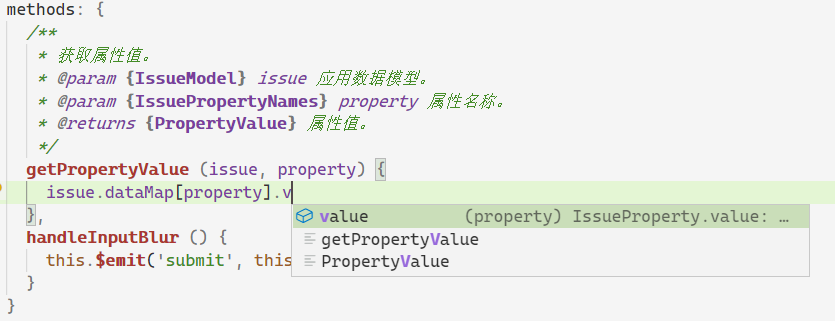
自动导入功能
在引用一些常用的导出符号时，如果这个符号没有被导入，则可以在打开的成员提示中找到这个标识符，并键入回车完成自动补全，这个时候会自动导入这个标识符：
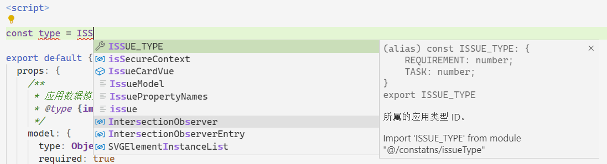
在提示信息中说明了 Import 'ISSUE_TYPE' from module "@/constatns/issueType"，键入回车即可自动导入该标识符。